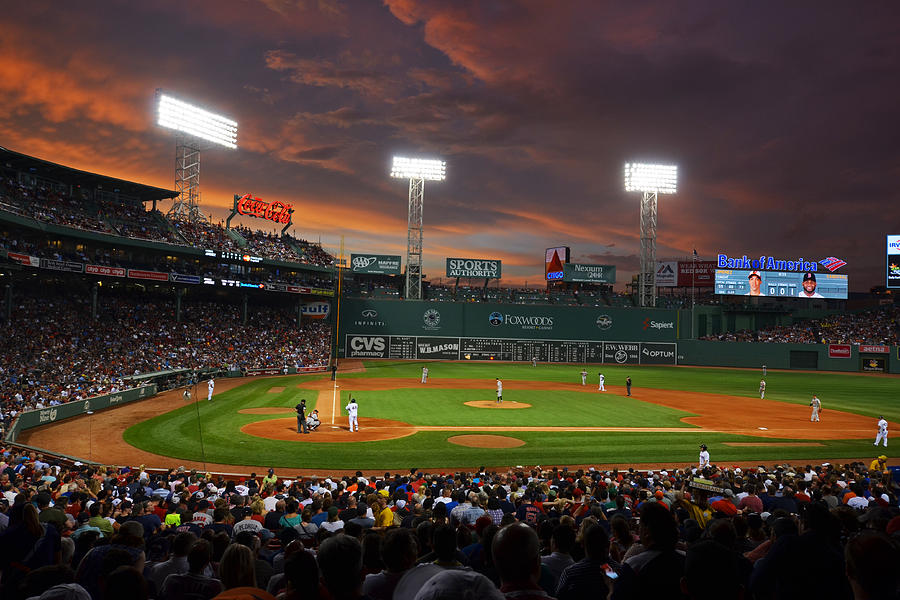

Why Breathing Helps

When a pitcher gets nervous, the body speeds up. Breathing is one of the fastest ways to slow everything down and reset before the next pitch.
Simple Breathing Method
- Breathe in through your nose for four seconds.
- Hold it for one second.
- Breathe out slowly for four seconds.
- Pick your target and go.
When To Use It
Use this after a walk, after missing badly, or when the game feels too fast.